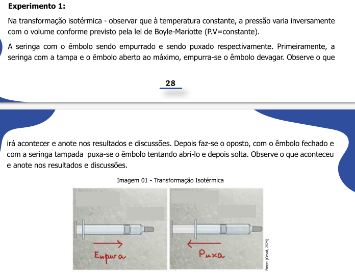

* Creating the data ;
* Creating an equation that will generate the data ;
* Importing the data (from a spreadsheet, for example)4 - Interactive graphs with plotly
Objectives:
1. Understand what “plotly” is used for and its interactive potential for teaching and learning
2. Use “plotly” scripts to build interactive graphs
3. Check the interactivity of the graphs created
The
plotly library is one of the richest in R for interactive graphics. Among other things, it allows zoom effects on the graph, as well as mouse over, where simply passing the mouse over an element of the graph opens the information for that point. In addition, it allows user-controlled animations, the insertion of selectors, sliders, menus, and buttons.
In addition, because it allows integration with a modern language called JavaScript, the library is also used in some data dashboards, such as Microsoft’s Power Bi (https://www.microsoft.com/pt-br/power-platform/products/power-bi), a collection of connected applications for data visualization. In fact, it is the
plotlyjs library itself, written in JavaScript, external to R and RStudio, that is incorporated into R.Creating graphs with
plotly requires a few simple commands. And the good news is that the graph produced is already interactive, with features such as zoom in/out, data shifting on axes, and mouseover effects, saving as a PNG image, among others. To build any graph, you need data. There are basically three ways to obtain data:
1 Creating an interactive graph
Let’s start by creating the data from an equation applied to a vector. To do this, we need…the vector! Think of a vector as a column (or row) in Excel. In
R, vectors are created by concatenating values separated by commas, as follows:x = c(1,2,3,4,5) # a vector; the "c" indicates "concatenation"
# assigns values from 1 to 5 to the variable "x"
# Alternatively,
x = 1:5 # also assigns values from 1 to 5 to the variable "x"To create the interactive graph, let’s illustrate the vertical launch equation below. This image, as well as the others used to illustrate the potential use of R & RStudio in basic education, were extracted from the notebooks of MAPA (Educational Support Material for Learning in Minas Gerais.

Now we will make an interactive graph from this data. But first, of course, you need to install the
plotly package in R. You can install it from the Packages tab in RStudio, if you haven’t already, and as explained in the previous section on Packages.
Final step… build a scatter plot of the vertical rise function.
To do this, simply copy the snippet below and paste it into a new
R script. Then run it in any of the ways mentioned in the previous section.
# Data:
t = 1:20 # defines the time vector
Vo = 100 # initial velocity, 100 m/s
g = 9.8 # acceleration due to gravity, m/s^2
# Equation (vertical rise):
H = Vo*t-1/2*g*t^2
# Interactive graph:
library(plotly)
plot_ly(x = ~t, y = ~H)# Note:
# Plotly syntax: ~variable, to assign a variable (x or y)
# type: to assign a graph typeR usually displays some messages (Warnings) after running the commands. These are not errors, but additional information, such as in the reproduction of the previous graph. In this case, the information is that the type of graph is missing, a scatter plot:
plot_ly(x = t, y = H, type = 'scatter')Now observe how much interactivity has emerged with the simple command above, by moving the mouse over the points on the graph, or by clicking on the icons that appeared above the graph. Test this interactivity:
- Hovering the mouse over the points on the graph will give you the coordinates of each point;
- Using the mouse scroll wheel will zoom in or out on the graph
- Left-clicking anywhere on the graph and drawing a rectangle will zoom in on that area;
- Double-clicking after zooming in will return you to the original graph;
- Positioning the mouse pointer between the values of an axis and dragging the mouse will cause the selected axis to shift;
- By selecting an icon in the upper right corner of the graph, you can, in sequence from the left, download the plot as an image, zoom in, move the axes, select points within a box or within a loop, zoom in, zoom out, scale to the original size, realign the axes to those of the original plot, view the coordinates (x and y), view only the y coordinate, and return to the beginning.
2 Saving the graph
Now a very interesting feature of
plotly: you can save the graph while maintaining all its interactivity in an HTML file. This way, anyone will be able to open your graph in an internet browser (Firefox, Chrome, Edge, for example), allowing them to observe the details and interactive action on any computer, notebook, tablet, or smartphone!!!And saving your first interactive graph is very simple:
1. After creating the graph, click "Export" just above the graph in the `Plots` tab;
2. Click "Save As Web Page"
3. Choose a name for the graph and save itNow just locate the file on your computer, open the file automatically in a browser, and check that its interactivity has been maintained. And to share it, if you wish, just send the interactive graph file to someone or display it on a multimedia projector.
3 Working with mathematical relationships in variables
When constructing a graph, it is sometimes useful to be able to perform a calculation on a variable without having to create a new vector. Let’s illustrate this with an isothermal transformation in the study of gases (Boyle-Mariotte’s law), as follows:

For example, if you are working in a spreadsheet (e.g., Excel) and want to build a graph of the above relationship, say V versus p, you will have to set up a column with this operation. In plotly, as in R as a whole, this is not necessary, since p can be considered as a constant 1/V. In fact, this constant is represented by the general constant of ideal gases, R, of known value.
Solving for the above situation:
# Data:
R = 8.314 # J/(mol*K), general constant of ideal gases
V = seq(0.224, length.out=50) # vector of "Volume" (in liters), with 50 points
T = 298 # K, absolute temperature
# Equation
# pV = RT; p = RT/V
p = R*T/V
# Graph:
library(plotly)
plot_ly(x = V, y = ~R*T/V, type = 'scatter', mode='lines')Now, if you want to name the axis labels and give the graph a title to better convey the physical meaning of the quantities involved, just add the
layout command as follows:library(plotly)
library(magrittr) # library for the pipe operator "%>%"
plot_ly(x = V, y = ~R*T/V, type = "scatter", mode="lines") %>%
layout(
title = "Isothermal Transformation of a Gas",
xaxis = list(title = "Volume V, L"),
yaxis = list(title = "Pressure p, bar")
)Now it’s your turn:
Open a new script and build a graph that shows any relationship between variables, as suggested below:
- Create the values of the independent variable (e.g., x = 1:10);
- Load the
plotlylibrary -library(plotly);
- Enter a general command line for the graph:
plot_ly(x = ~x, y = ~sqrt(x), type = "scatter")
- Select these lines, press Ctrl+Enter, and observe the output (i.e., the graph, in the
plotstab;
- Modify the “y” variable, replacing the value of “x” with some other relationship, such as:
~exp(x)- exponential,~sin(10*x)- sine, ~sqrt(x)` - square root;